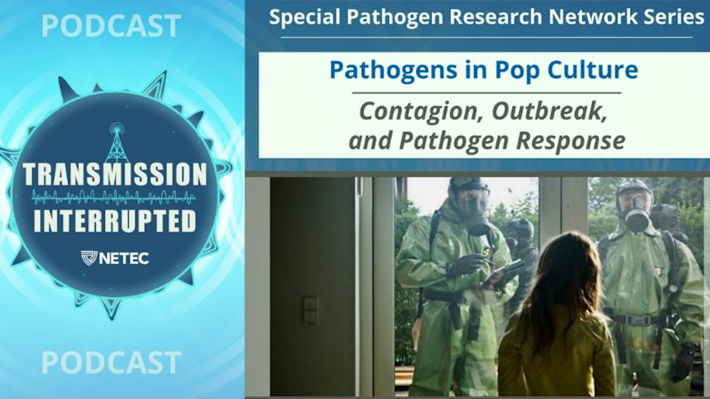
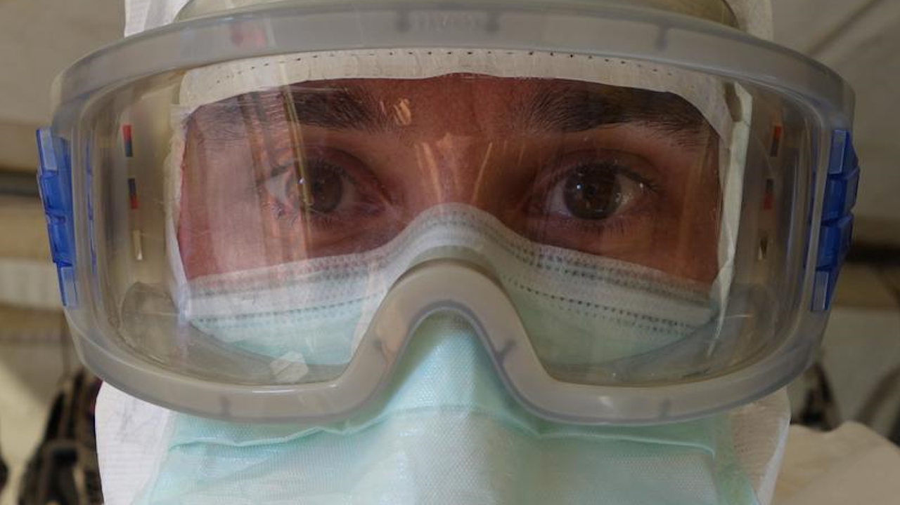

Disease in Pop Culture
On this page, you'll find several resources including videos, podcasts, news articles, and academic papers related to disease in pop culture. Each resource includes a brief summary and recommended education level to help you decide which to click on.
Videos and Podcasts
Pathogens in Pop Culture: Contagion, Outbreak, and Pathogen Response
In this episode of the “Transmission Interrupted” podcast series, the hosts explore the depiction of pathogens in popular films such as “Contagion” and “Outbreak.” They discuss how these movies represent pathogen response and the impact of such portrayals on public understanding of infectious diseases and emergency preparedness. The episode features expert insights into the accuracy of these cinematic depictions and their influence on public health awareness.
Recommended Education Level: 10th Grade +
Listen to PodcastDisease Expert Breaks Down Pandemic Scenes From Film & TV | WIRED
In this video from WIRED, Brian Amman, an ecologist for the Centers for Disease Control, takes a look at disastrous pandemics and examples of infection from a variety of television shows and movies and breaks down how accurate their depictions really are.
Warning: Some of the clips from the movies and shows featured in this video include realistic imagery of disease. Additionally, clips of "Contagion" include imagery of processing livestock for food. Finally, there is some sexual content between timestamps 18:40 and 19:00.
Recommended Education Level: Undergraduate +
Watch VideoArticles
Pathogens and Pop Culture: An Interview with Billy Fischer (Part I)
This insightful article features an interview with Dr. Billy Fischer, who discusses the intersection of pathogens and pop culture. The conversation explores how infectious diseases are portrayed in media and their impact on public perception and understanding of real-world health issues. Dr. Fischer provides expert insights into the accuracy of these portrayals and the role of media in shaping public health awareness.
Recommended Education Level: 10th Grade +
Read ArticleParasites and Viruses in Popular Culture

This article delves into the portrayal of parasites and viruses in popular culture. It examines how these pathogens are represented in literature, film, and other media, and discusses the influence of these portrayals on public perception and understanding of infectious diseases. The article highlights the intersection of science and culture, demonstrating how media can shape societal attitudes towards parasitic and viral infections.
Recommended Education Level: High School +
Read ArticleAcademic Papers
Zombies—A Pop Culture Resource for Public Health Awareness
This article discusses how the concept of zombies can be utilized as an innovative resource for raising public health awareness. The authors explore the parallels between zombie outbreaks in fiction and real-world disease outbreaks, highlighting how zombie narratives can effectively engage the public and promote understanding of infectious disease prevention and emergency preparedness. The article underscores the potential of using popular culture to communicate important public health messages.
Recommended Education Level: 11th Grade +
Read PaperInfectious Diseases in Cinema: Virus Hunters and Killer Microbes
This article examines the portrayal of infectious diseases in cinema, focusing on how movies depict virus hunters and killer microbes. The authors analyze various films to explore how these representations influence public perception and understanding of infectious diseases. The article discusses the accuracy of these portrayals, their impact on public health awareness, and the role of cinema in educating and engaging audiences about real-life epidemiological challenges.
Recommended Education Level: High School +
Read Paper